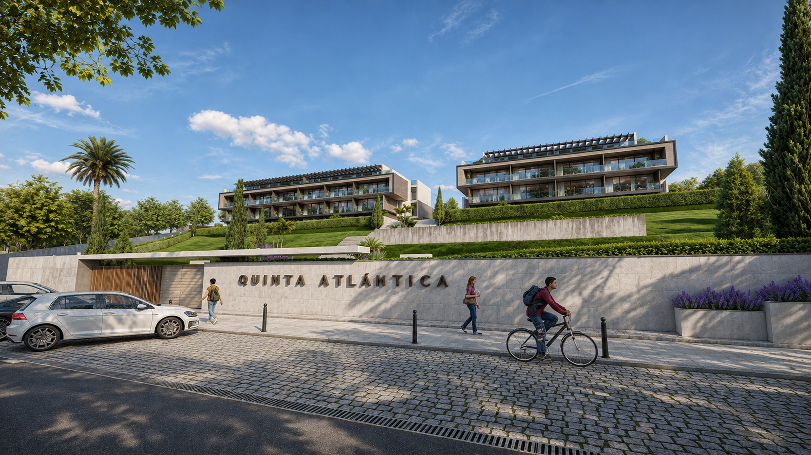

(Servicios)
Qué hago
 ExterioresImágenes que sitúan el edificio en su contexto real —luz, vegetación, escala y calle— antes de colocar el primer ladrillo.
ExterioresImágenes que sitúan el edificio en su contexto real —luz, vegetación, escala y calle— antes de colocar el primer ladrillo.- Renders fotorrealistas para impresión y web
- Escenas de día, atardecer o noche
- Integración fotográfica en el solar real
- Paisajismo, vegetación y personas a la escala correcta
 InterioresEspacios amueblados, iluminados y estilizados para que tu cliente entienda —y apruebe— un interior antes de comprar o construir nada.
InterioresEspacios amueblados, iluminados y estilizados para que tu cliente entienda —y apruebe— un interior antes de comprar o construir nada.- Estancias amuebladas con materiales honestos
- Escenarios de luz natural y artificial
- Alternativas de materiales y mobiliario
- Vistas de detalle de los acabados
 AnimaciónRecorridos y vuelos que muestran un edificio en movimiento, con una cámara pausada que sigue la forma en que las personas lo recorrerán de verdad.
AnimaciónRecorridos y vuelos que muestran un edificio en movimiento, con una cámara pausada que sigue la forma en que las personas lo recorrerán de verdad.- Recorridos virtuales y vuelos en Full HD
- Movimientos de cámara pausados y cuidados
- Transiciones del día al atardecer
- Títulos y tu música, si la aportas

Material comercialPlanos en color, infografías y piezas que convierten una promoción en algo fácil de entender, presentar y vender.- Planos comerciales y de viviendas en color
- Infografías con superficies, orientación y zonas comunes
- Artes para vallas de obra y folletos
- Piezas para portales inmobiliarios y webs de promoción
¿Tienes un proyecto en mente?
Hablemos →